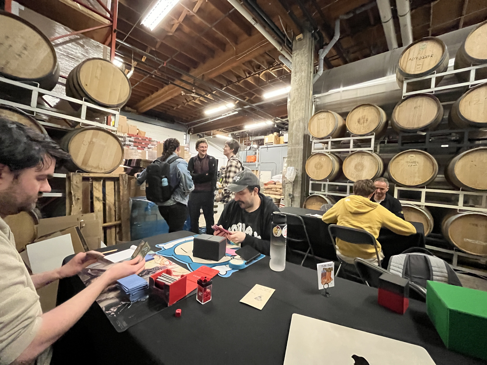
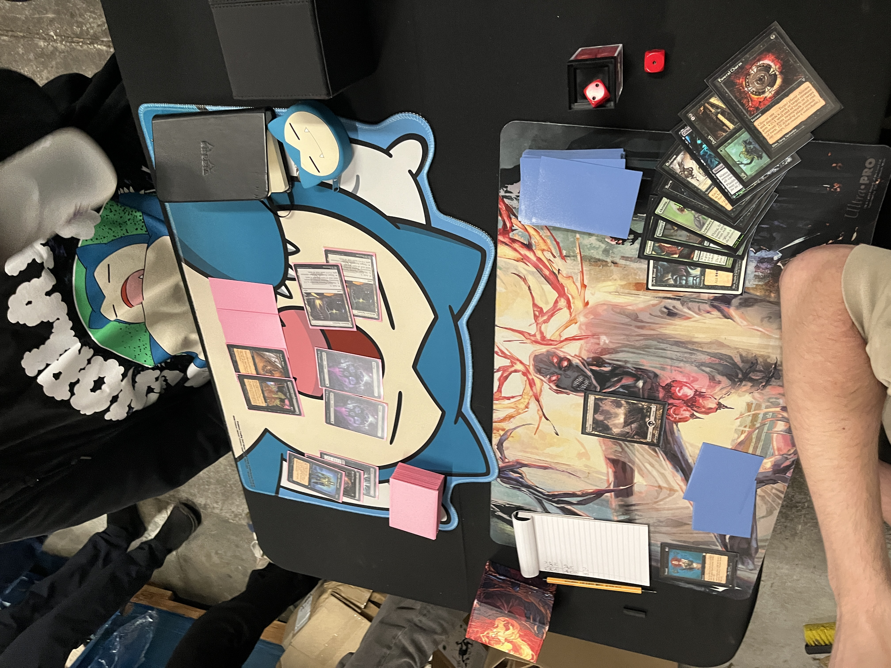

After the smoke cleared, four players remained: Chad Galpin (Reanimator), Markus Thibeau (Moneyball Black), Alastair McLellan (Goblins), and Colin Whitwell (TerraGeddon).
Thibeau was fresh off a three-game chess match against Rob Hackney's Iggy Pop Brain Freeze combo. The two had been frozen over a perilous board in Game 3, in which Hackney's Ill-Gotten Gains loops were recurring Thibeau's Ritual — powering a Withered Wretch, eating the very fuel Hackney needed for his combo. In the end, through careful play, Thibeau eked it out.
Thibeau's a long-standing member of the Vancouver Magic community, and long since graduated to the status of Pro Tour grinder. Galpin, meanwhile, is a relatively new player who'd discovered Premodern as an offshoot of Vancouver's Pauper community. But both the deck and his play were firing on all cylinders.
Game 1 —
Thibeau keeps. Galpin mulligans a hand with everything but a reanimation target, and settles on 6.
Thibeau leads Cabal Therapy naming "Dark Ritual."
Galpin flips over:
In other words, no Ritual — but pretty much everything else.
And then it happens. Galpin draws.
"Dark Ritual?" Almost apologetic.
Thibeau can only shake his head. It was a beat along the lines of which any seasoned grinder had — and would continue to — suffer, time and time again. He'd done everything he could.
"Imp. Discard Akroma. Reanimate Akroma. Take 8 to 12. Hit you for 6."
Thibeau draws. Scoops his cards with a sigh.
"Sorry," Galpin offers. "Therapy bug happens IRL sometimes."
+3 Dystopia · +1 Snuff Out · +1 Knight of Stromgald
+2 Sickening Dreams
Game 2 —
Thibeau leads with Duress, seeing:
Thibeau is already displeased at the robustness of Galpin's hand. He takes the Unmask — leaving Galpin all the pieces, but without a way to get the monster into the graveyard.
And then it happens… again?
Galpin draws — again, apologetic at his luck — and leads Swamp into Dark Ritual… Unmask myself…
Thibeau mumbles a gripe. A replacement Unmask. Once again Galpin had seemingly peeled the perfect card at the perfect time.
Unmask takes Akroma, Exhume brings it back, it attacks for 6 — and based on Thibeau's reactions, Galpin must've been expecting a quick concession.
But Thibeau just flashes a Diabolic Edict — and with Galpin's resources entirely spent — it's off to Game 3.
+2 Engineered Plague
Game 3 —
Galpin's on the play now. No Duress, no Therapy — no interference. He keeps a one-lander with big potential if he draws a second land within a turn or two.
Swamp. Ritual. Buried Alive.
Thibeau leads Duress, seeing:
He takes the Exhume.
Galpin draws Therapy, names Wretch. Whiff.

Thibeau flashes back the Therapy, hitting the second reanimation spell.
Two Factories, a Knight of Stromgald, and three or four attack phases later — it's over.